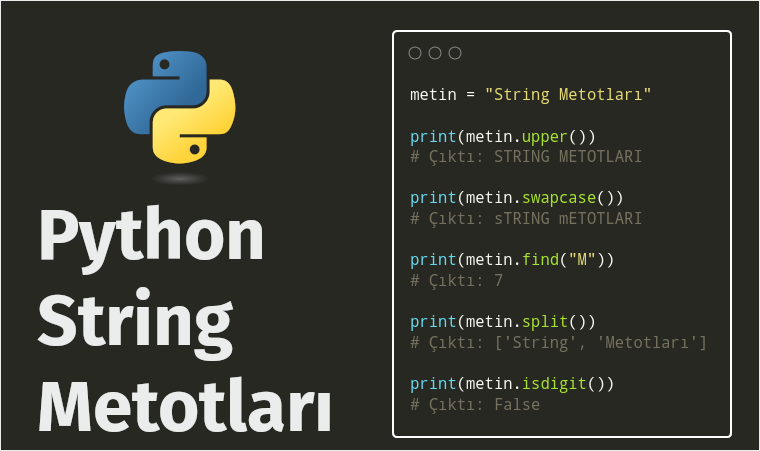

Cum 21 Kasım 2025
Tags:
getattr() Fonksiyonu
getattr() fonksiyonu, Python'da bir nesnenin, adı belirtilen özniteliğinin değerini dinamik olarak almak için kullanılan yerleşik bir fonksiyondur. Bu fonksiyon, öznitelik adlarının çalışma zamanında (runtime) belirlendiği durumlarda veya metodları dinamik olarak çağırmak gerektiğinde kullanılır.
İşte getattr() işlevinin temel sözdizimi ve dönüş mekanizmaları:
Sözdizimi:
getattr() fonksiyonu iki ana imza ile …
Continue reading »
Prş 20 Kasım 2025
Tags:
String Metotları
Python’da her veri tipinde olduğu gibi stringler için de hazır bir çok metot bulunmaktadır. Bu metotlar sayesinde dizgi, metin (string) tipindeki veriler üzerinde hızlı ve esnek bir şekilde oynayabiliriz.

String Nedir?
String metotlarını anlatmadan önce kısaca string'in nam-ı diğer dizgi ve metin ifadesinin ne olduğundan kısaca bahsedelim …
Continue reading »
Paz 16 Kasım 2025
Tags:
pyarrow String Türü ile Hızlanmak
Pandas'ta dizelerle (strings) mi çalışıyorsunuz ve beklediğinizden biraz daha yavaş olduğunu mu görüyorsunuz? Bu eğitimde, PyArrow'u kullanarak işleri nasıl hızlandırabileceğimizi öğreneceğiz.
Örnek olarak kullanacağımız dosyanın adı TDK_imla.txt. Bu dosya, satır başına bir kelime olacak şekilde toplam 76.183 kelime içeren bir imla sözlüğüdür …
Continue reading »
Cts 02 Ağustos 2025
Tags:
F-String Kullanımı
F-String, bir dizenin (string ifadenin) seçilen kısımlarını biçimlendirmenize olanak tanır.
F-String, python 3.6'da tanıtıldı ve şu anda dizeleri biçimlendirmek için tercih edilen yöntemdir.

Python 3.6'dan önceformat() yöntemini kullanmak zorundaydık. format() yöntemi hala kullanılabilir, ancak f-string daha hızlıdır ve dizileri biçimlendirmek için tercih edilen yöntemdir. O …
Continue reading »
Paz 06 Temmuz 2025
Tags:
unique() ve nunique() Fonksiyonları
unique() Fonksiyonu
unique() Fonksiyonu, Veri Çerçevesinden benzersiz değerler tespit etmek, kategorik verileri analiz etmek veya yinelenen verileri tanımlamak için kullanılır.

unique() Fonksiyonunun Kullanımı
unique() Fonksiyonu bir NumPy dizisi döndürür. Bir sütundaki benzersiz (farklı) değerleri tanımlamak için kullanışlıdır ve bu, kategorik verilerle çalışırken veya benzersiz değerleri algılarken …
Continue reading »
Paz 15 Haziran 2025
Tags:
value_counts() Metodu
pandas.DataFrame.value_counts
DataFrame.value_counts( *subset=None*,
*normalize=False*,
*sort=True*,
*ascending=False*,
*dropna=True*)
Veri çerçevemizde sütun bazında verinin kaç kez tekrar ettiğini (kaç adet bulunduğunu) öğrenmek için value_counts() fonksiyonunu kullanbiliriz.
value_counts metodu, veri frekansını (sıklığını) içeren bir Seri döndürün. Excel ve Libre Ofis Calc uygulamalarındaki Yinelenenleri …
Continue reading »
Cts 05 Ekim 2024
Tags:
globals() Fonksiyonu

Tanım
1. Tanım:
globals() fonksiyonu, Python'da gömülü (built-in) bir fonksiyondur ve geçerli global sembol tablosunu temsil eden bir sözlük (dict) yapısı döndürür.
Sembol Tablosu: Bir programla ilgili tüm gerekli bilgileri içeren bir veri yapısıdır. Değişken adları, fonksiyonlar, sınıflar vb. bilgileri barındırır. Global sembol tablosu, programın global kapsamıyla ilgili …
Continue reading »
Cts 11 Mayıs 2024
Tags:
glob() Modülü / Kütüphanesi
glob, Python’da belirli bir dizin (klasör) içindeki dosyaları listelememizi sağlayan standart (gömülü) python kütüphanelerinden / modüllerinden biridir. Modülü kullanmak için import glob kodunu çalışmanıza eklemeniz yeterli.
glob kütüphanesi, dosya yolu ve desen yönetimini basitleştirmek için oyunun kurallarını değiştiren güçlü bir araçtır. Joker karakter kalıpları ve özyineleme (recursive …
Continue reading »
Cts 17 Şubat 2024
Tags:
Sürükle ve Bırak
Flet'te sürükle ve bırak mekanizması oldukça basittir - bir kullanıcı Sürüklenebilir (Draggable) kontrolü sürüklemeye başlar ve onu SürüklemeHedefi (DragTarget)'ne "bırakır". Hem sürüklenebilir öğe hem de sürüklenebilir hedef aynı gruba (group) sahipse, bir sürükleme hedefi on_accept olay işleyicisini çağırır ve sürüklenebilir kontrol kimliğini (ID) olay verisi olarak iletir …
Continue reading »
Prş 15 Şubat 2024
Tags:
Büyük listeler
Listeleri görüntülemek için çoğu durumda Sütun (Column) ve Satır (Row) kontrollerini
kullanabilirsiniz. Ancak liste yüzlerce veya binlerce öğe içeriyorsa, Sütun ve Satır kullanmak pek mantıklı olmaz. Bunun sebebi, satır ve sütun kontrolü kullanıldığında, uygulama ekranında (kaydırma konumunda) görünmese bile, tüm öğeler bir kerede oluşturulur. Dolayısı ile uygulama çalıştırıldığında …
Continue reading »